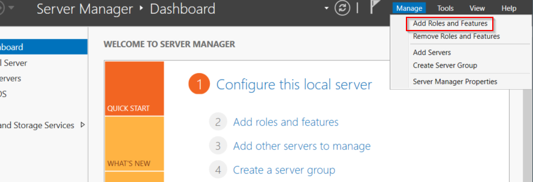

then 3*next
tick that and select add features

then 4*next and tick that

and install.
and then

click next then tick this

then click 6*next

and then 2*next and configure.
So all we're doing is we're setting up a certificate so that we can run LDAP on a secure side so we're going to run LDAPS(LDAP secure)
now we could pull off this attack with LDAP but it's a lot easier with LDAPS.
You must reboot the server before go ahead.